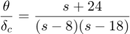
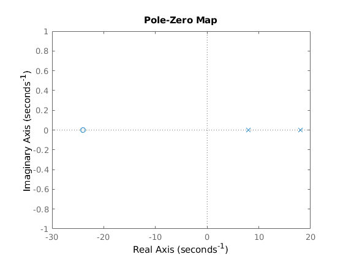
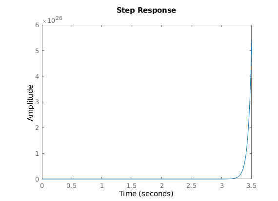
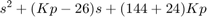
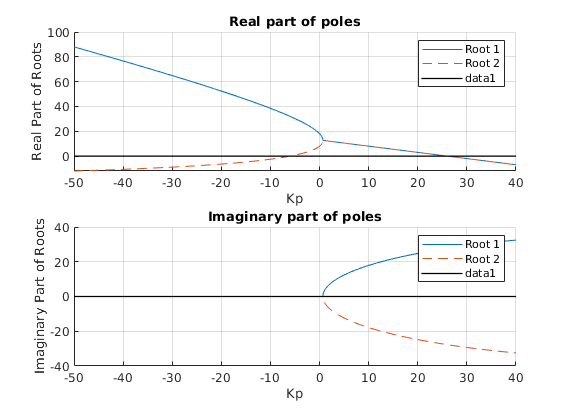
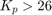
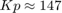
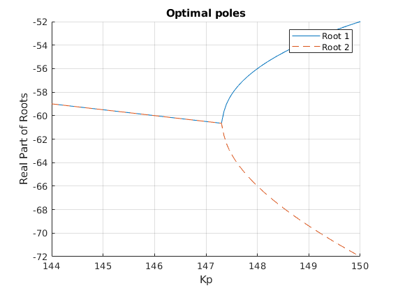
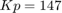
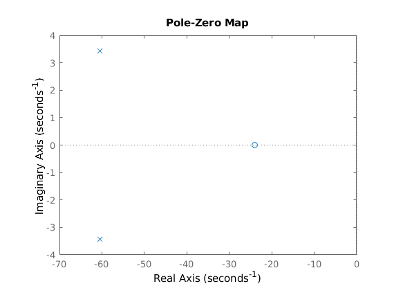

Task 2
Analysis of piloted airplaine stability.
Contents
Transfer function
the transfer function, with canard deflection as input and pitch altitude as output, is given as:

This system is clearly unstable, as both poles are positive real numbers (8 and 18) \\ We can verify this by using pzplot and looking at the poles:
s = tf('s');
sys = (s+24)/((s-8)*(s-18));
pzplot(sys);
 As we can see, both poles have positive real part, so the system must be unstable
Step response and stability
close; step(sys);
The output of our system blows up to infinity, so it is clearly unstable.
The open-loop system does not satisfy BIBO, and requires closed loop control to become stable.
Propotional control transfer function
We add a proportional control and find an equivalent transfer function for the whole system. I use the block diagram to help express the new system.
close; s = tf('s'); H = (s + 24)/((s-8)*(s-18)); % The plant Kp = -5; % The proportional gain closed_loop = (Kp*s+Kp*24)/(s^2+(Kp-26)*s+(144+24*Kp)); pole(closed_loop)
ans =
30.2054
0.7946
We can plot the poles of this system as a function of the proportional gain
we need to plot the roots of the polynomial:

close; Kp = -50:0.05:40; s_1 = (-(Kp-26)+sqrt((Kp-26).^2-4*(144+24.*Kp)))/2; s_2 = (-(Kp-26)-sqrt((Kp-26).^2-4*(144+24.*Kp)))/2; figure; subplot(2,1,1); grid on; hold on; plot(Kp, real(s_1), 'DisplayName', 'Root 1', 'LineStyle', '-'); plot(Kp, real(s_2), 'DisplayName', 'Root 2', 'LineStyle', '--'); plot(Kp, zeros(size(Kp)), 'k', 'LineWidth', 1); % x-axis xlabel('Kp'); ylabel('Real Part of Roots'); title('Real part of poles'); legend; subplot(2,1,2); grid on; hold on; plot(Kp, imag(s_1), 'DisplayName', 'Root 1', 'LineStyle', '-'); plot(Kp, imag(s_2), 'DisplayName', 'Root 2', 'LineStyle', '--'); plot(Kp, zeros(size(Kp)), 'k', 'LineWidth', 1); % x-axis xlabel('Kp'); ylabel('Imaginary Part of Roots'); title('Imaginary part of poles'); legend;
Kp-stable values
From inspecting the plot we see that both poles have negative real part when .
We can also see that  gives us optimal poles.
close; figure; grid on; hold on; Kp = 144:0.05:150; s_1 = (-(Kp-26)+sqrt((Kp-26).^2-4*(144+24.*Kp)))/2; s_2 = (-(Kp-26)-sqrt((Kp-26).^2-4*(144+24.*Kp)))/2; plot(Kp, real(s_1), 'DisplayName', 'Root 1', 'LineStyle', '-'); plot(Kp, real(s_2), 'DisplayName', 'Root 2', 'LineStyle', '--'); xlabel('Kp'); ylabel('Real Part of Roots'); title('Optimal poles'); legend;
Verifying that Kp = 26 gives zero-poles
close; Kp = 26; closed_loop = (Kp*s+Kp*24)/(s^2+(Kp-26)*s+(144+24*Kp)); real(pole(closed_loop))
ans =
0
0
looking at the pole values for our new controller with 
Kp = 147; closed_loop = (Kp*s+Kp*24)/(s^2+(Kp-26)*s+(144+24*Kp)); real(pole(closed_loop))
ans = -60.5000 -60.5000
close; pzplot(closed_loop);
Control system step response
We have verified that the poles of our new system are all negative real part. This means the system stable, and we can verify this by viewing the step response of the closed loop system:
[y,t]=step(closed_loop); %save the output values to check steady state
SS_error = abs(1-y(end))
SS_error =
0.0389
Thus we have verified that our control system is stable and reaches a steady state error of 3.89% We can also check that our simulink model agrees with our matlab simulations (see images).